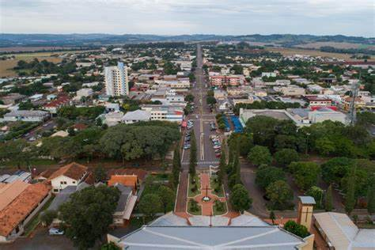
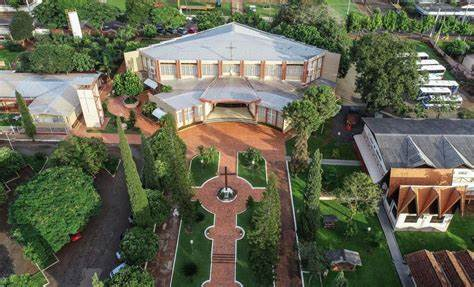
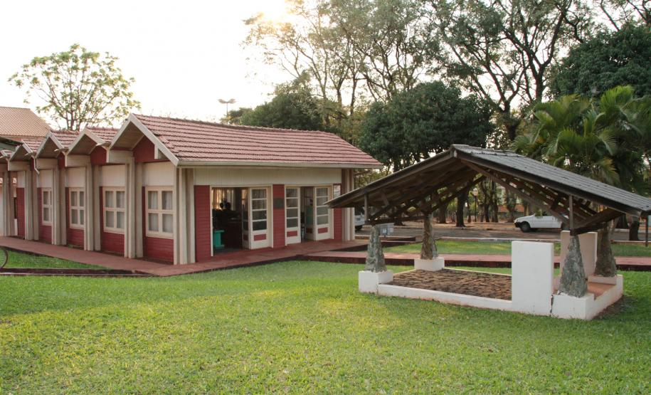
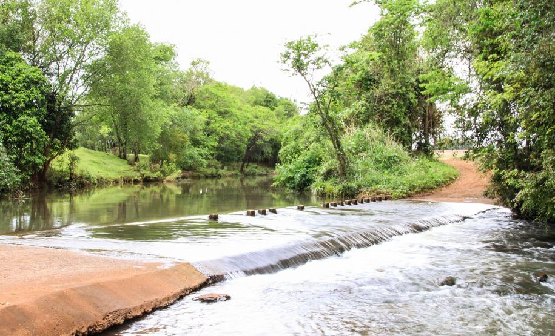
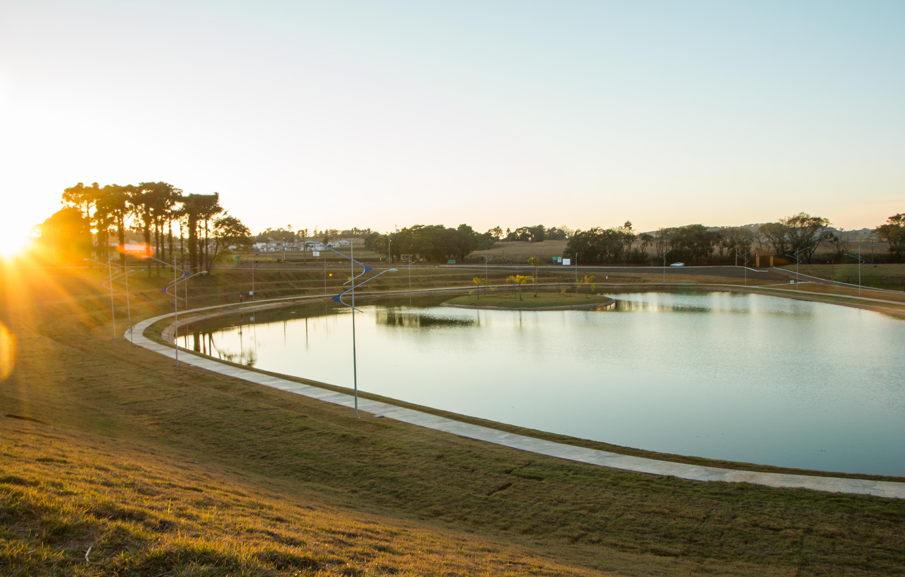

Histórico de Missal
Missal, uma cidade acolhedora, que cultiva as tradições alemãs, herdadas de seus pioneiros, teve sua formação a partir do desmembramento do município de Medianeira e a data oficial da sua criação foi em 30 de dezembro de 1981, por meio da Lei Estadual n° 7.566. Teve sua Emancipação Política-administrativa, no dia 01 de fevereiro de 1983, data esta que marca a posse do primeiro prefeito do Município de Missal, Luciano Kreutz, além da primeira Câmara de Vereadores de Missal, tornando assim, Missal um Município independente. O evento de posse da primeira Legislatura de Missal, aconteceu no Clube 19 de Março, onde Luciano Kreutz assumiu o cargo de Prefeito, tendo como seu vice Afonso Paetzold e vereadores Rudi Scherer Paetzold (Presidente 1985/1986), João de Pieri (Presidente 1983/1984), Irani Teresinha Giehl (Presidente 1986/1988), Flávio Alvício Griebler, Aloísio Arlindo Fritzen, Silvestre Michels, Casemiro Schimanski, Orlando Bremm e Ermindo Junges. No dia seguinte, 02 de fevereiro de 1983, foi realizada a primeira reunião da Câmara Municipal de Missal. Na época, durante o mandato desta Legislatura, foram realizadas 209 Sessões Ordinárias, 89 Sessões Extraordinárias, 05 Sessões Solenes, além de 130 Projetos de Lei aprovados, 09 Projetos de Lei do Legislativo, 168 Requerimentos, 11 Decretos Legislativos, 51 Resoluções, 50 Convênios, (Referendados).
Galeria de Fotos

.

IMAGEM DA CIDADE DE MISSAL

IGREJA CATÓLICA DE MISSAL

MUSEU MUNICIPAL

PONTE MOLHADA


PONTO TURÍSTICO DE MISSAL
PREFEITO E VICE-PREFEITO ATUAL DE MISSAL: